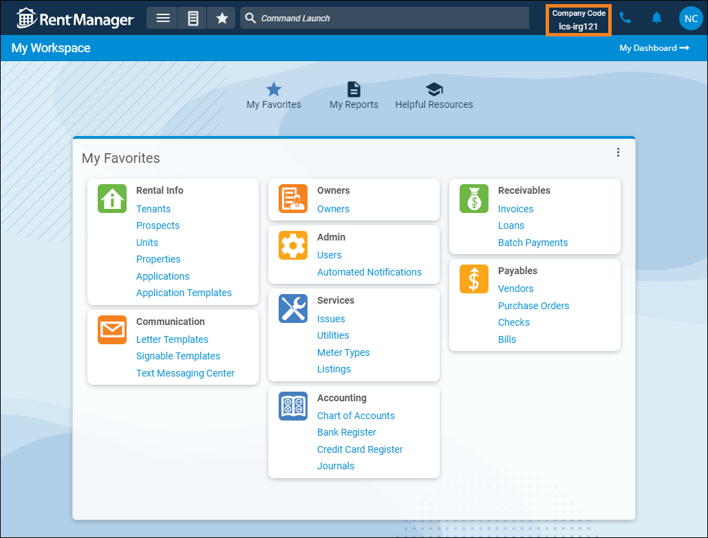

Source: https://rmxhelp.rentmanager.com/Topics/Express/KB/rmAppSuite-Pro-Set-Up.htm
Set Up rmAppSuite Pro
rmAppSuite Pro allows you to take Rent Manager in the field. From your mobile device, you can capture images and videos, perform inspections, read utility meters, accept payments, and manage information related to issues, assets, and violations. Additionally, if you have rmVoIP or the licensed text messaging feature, you can call or text prospects, tenants, vendors, and owners directly through the app without using your personal number.
This topic provides details on how to set up and install rmAppSuite Pro.
More Information
rmAppSuite Pro is a licensed feature and must be purchased separately. For more information, contact your sales representative at sales@rentmanager.com.
Step 1: Enable Features in System Preferences
Related Privileges
| Group | Privilege | Column |
|---|---|---|
| System | System Preferences | View, Edit |
For more information, refer to Control User Access.
Before you can utilize rmAppSuite Pro, you need to enable the Inspection and Service features in system preferences. Inspection preferences allow you to create default email messages sent from the app and enable emailed inspection reports as well as video capabilities, while Service preferences establish which service issues display to users and if users can download issue lists to work offline.
To enable the Inspections and Service features for rmAppSuite Pro, do the following in Rent Manager:
-
Go to
 arrow_forward
arrow_forward  Administration, then go to .
Administration, then go to . -
Check Enabled.
-
Edit additional settings for the Inspection module as desired. For more information, refer to rmAppSuite Inspection (System Preferences).
-
Click Save.
The Inspection feature is enabled for rmAppSuite Pro. -
While still in system preferences, go to .
-
Check Enabled.
-
Edit additional settings for the Service module as desired. For more information, refer to rmAppSuite Service (System Preferences).
-
Click Save.
The Service featured is enabled for rmAppSuite Pro.
Step 2: Set Up Users
Related Privileges
| Group | Privilege | Column |
|---|---|---|
| System | Manage all users and privileges | View, Edit |
| Manage assigned users and privileges | View, Edit |
For more information, refer to Control User Access.
For users to access the Inspection and Service features, they need to be designated with specific privileges. To enable inspection and service permissions for users, do the following:
-
If the user needs access to service issues within rmAppSuite Pro, go to
arrow_forward Services arrow_forward Services arrow_forward  Service Setup arrow_forward Service Manager arrow_forward Maintenance Techs and click
Service Setup arrow_forward Service Manager arrow_forward Maintenance Techs and click  Add Maintenance Tech to add their account as a maintenance tech. For more information, refer to Add Maintenance Techs.
Add Maintenance Tech to add their account as a maintenance tech. For more information, refer to Add Maintenance Techs. -
Go to
arrow_forward Administration, then go to and select a user account.
The user's details page displays. -
On the General tab, in the Optionstile, check Inspector for the user to access inspections within rmAppSuite Pro.
-
On the Privileges tab, enable any additional privileges in the Inspections and Service Manager privilege groups that the user needs to perform their job. For more information, refer to Inspections Privilege Group and Service Manager Privilege Group.
-
Click Save and repeat the previous two steps for each user licensed to use inspections and/or service in the app.
Users can access the Inspection and/or Service features when they log into rmAppSuite Pro.More Information
To save time establishing user privileges, you can create user roles with the necessary privileges and assign users to those roles. For more information, refer to User Roles (Page).
Step 3: Install rmAppSuite Pro
To install rmAppSuite Pro on your mobile device, do the following:
-
Access the app store on your device.
-
Search for rmAppSuite Pro.
-
Select rmAppSuite Pro from the search results.
-
Verify that the app is published by LCS.
-
Install the app.
The app is ready to use.
Step 4: Log In to rmAppSuite Pro
To log in to rmAppSuite Pro, do the following on your mobile device:
-
Tap the rmAppSuite Pro icon to launch the app.
-
Enter the company code, which is provided to your system administrator by LCS. You can locate it at the top of any page in Rent Manager Express.

After you log in for the first time, rmAppSuite Pro remembers your company code.
-
In the username and password fields, enter your Rent Manager user account credentials.
-
Tap
 .
.
You are logged in.
Next Steps
The following options allow you to customize your app workflow by creating inspection templates, checklist templates for issues, and scheduling inspections.
| Option | Description |
|---|---|
|
Checklist Templates |
Checklist templates allow users to create saved lists of to-do items that can be easily populated in the Checklist section on service issues, For more information, refer to Checklist Templates (Page). |
|
Inspection Templates |
Creating inspection templates in Rent Manager, which define the areas and items of a unit that need to be examined, allows you to use the templates in the Inspection feature of rmAppSuite Pro. For more information, refer to Add Inspection Template. |
|
Inspection Schedules |
Inspections can be scheduled in the following ways:
At the top of the Add Inspection pop-up, in the Scheduled field, select a date for the inspection to be performed. For more information, refer to Inspections (Page). |